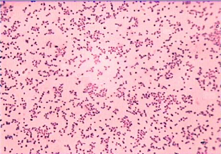

Análisis detallado con referencias según normas APA 7ª edición
Introducción
Bordetella pertussis es una bacteria Gram-negativa que causa la tos ferina. Su genética es clave para entender su virulencia, adaptación y respuesta a las vacunas (Parkhill et al., 2003).
Genoma y estructura genética
El genoma de B. pertussis tiene aproximadamente 4.1 millones de pares de bases (Mb) y codifica alrededor de 3,800 genes. Está compuesto por un cromosoma circular sin plásmidos conocidos (Parkhill et al., 2003).
Tabla 1. Características genómicas de Bordetella pertussis
Característica
Descripción
Tamaño del genoma
~4.1 Mb
Número de genes
~3,800
Estructura
Cromosoma circular
Plásmidos
No detectados
GC content (contenido de GC)
67%
Genes relacionados con la virulencia
La patogenicidad de B. pertussis se debe a la expresión de varios genes codificantes de factores de virulencia, entre ellos:
ptx operón: Codifica la toxina pertussis, responsable de la mayoría de los síntomas (Carbonetti, 2015).
fimbrinas (fim): Facilitan la adhesión a las células del tracto respiratorio.
adenilato ciclasa: Enzima que interfiere en la respuesta inmunitaria del huésped.
hemaglutinina filamentosa (FHA): Proteína de adhesión esencial para colonización (Parkhill et al., 2003).

Variabilidad genética y evolución
Aunque el genoma de B. pertussis es relativamente estable, se han detectado variaciones en genes relacionados con la toxina y adhesinas que podrían influir en la eficacia de las vacunas actuales (King et al., 2017). La pérdida o modificación de algunos genes refleja una adaptación evolutiva a su hospedero humano.
Referencias
Carbonetti, N. H. (2015). Pertussis toxin and adenylate cyclase toxin: key virulence factors of Bordetella pertussis and targets for acellular pertussis vaccines. Pathogens and Disease, 73(7), ftv059. https://doi.org/10.1093/femspd/ftv059
King, A. J., van Gorkom, T., & van der Maas, N. A. (2017). Genetic variability in Bordetella pertussis: Impact on vaccine effectiveness. Vaccine, 35(35), 4574-4580. https://doi.org/10.1016/j.vaccine.2017.06.076
Parkhill, J., Sebaihia, M., Preston, A., Murphy, L. D., Thomson, N. R., Harris, D. E., ... & Barrell, B. G. (2003). Comparative analysis of the genome sequences of Bordetella pertussis, Bordetella parapertussis and Bordetella bronchiseptica. Nature Genetics, 35(1), 32-40. https://doi.org/10.1038/ng1227